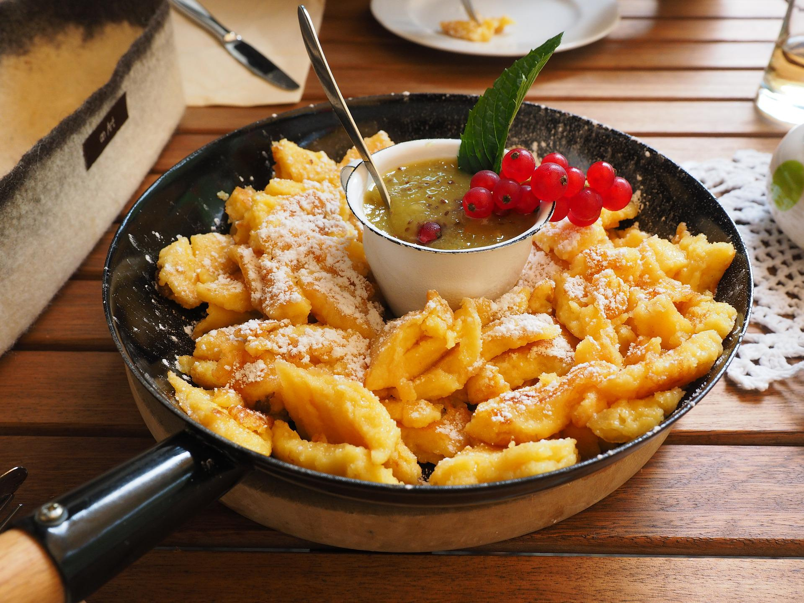

Kaiserschmarrn - Tiroler Landgasthofrezept
| g | Rosinen | |
| EL | Rum, Cognac oder Wasser | |
| Eigelb | ||
| Pck. | Bourbon-Vanillezucker | |
| EL | Zucker | |
| Prise(n) | Salz | |
| g | Mehl | |
| ml | Milch | |
| g | Butter, zerlassen | |
| Eiweiß | ||
| TL | Puderzucker | |
| n.B. | Butter zum Braten, ca. 15-20g je Pfanne |
Zubereitung
Dieses traditionelle Rezept stammt aus einem Tiroler Landgasthof und wird dort seit vielen Generationen so zubereitet. Es enthält einige schöne Geheimnisse aus Omas Trickkiste, die nicht immer preisgegeben werden. Auf jeden Fall nichts für Kalorienzähler. Die Rosinen in 5 EL Rum mindestens eine halbe Stunde einlegen. Wer keinen Rum mag, nimmt Cognac. Kinder und Antialkoholiker nehmen Wasser. Das Eigelb mit dem Vanillezucker, einer Prise Salz und 1 geh. EL Zucker mit dem Handrührgerät schaumig aufschlagen. Nach und nach abwechselnd jeweils einen Löffel Mehl und einen guten Schuss Milch einrühren, bis alles aufgebraucht ist. Anschließend die zerlassene Butter einrühren. (Kalorienzähler: das könnt ihr auch sein lassen und Euch wundern, wieso das Zeug nicht so gut schmeckt, wie im Skiurlaub.) Der Teig wirkt ziemlich dünnflüssig, das ist genau richtig so. Den Teig jetzt eine halbe Stunde ruhen lassen, danach nochmals gut durchschlagen. Dann das Eiweiß zu einem festen Eischnee aufschlagen und mit einem Löffel langsam aber gründlich unter die Teigmasse heben. Es sollten keine Eiweißflocken mehr zu sehen sein. Danach die Rosinen ohne den Rum unterrühren. In einer Pfanne Butter zerlassen und den Teig ca. 1 cm hoch eingießen. Hitze etwas reduzieren und goldgelb anbacken lassen. Immer mal wieder drunter schauen. Die Masse vierteln, umdrehen und wieder anbacken lassen. In mundgerechte Stücke teilen, mit 2 TL Zucker bestreuen und kurz karamellisieren lassen. Fast fertig: Auf Tellern anrichten und mit Puderzucker bestäuben. Mit dem restlichen Teig genau so verfahren. Dabei vor jedem Eingießen in die Pfanne alles nochmals gut verrühren, da die Rosinen schnell zu Boden sinken. Ergibt gute drei Pfannen voll Schmarrn und macht 4 - 6 Personen satt. Traditionell wird der Kaiserschmarrn mit Pflaumenkompott serviert. Tipps: Karamellisieren bringt's: in einer beschichteten Pfanne brennt auch nichts an. Einfach Zucker drübergeben, wenden, eine halbe Minute warten, währenddessen auf die ungezuckerte Seite Zucker geben, nochmals wenden, wieder eine halbe Minute warten, fertig. Nicht süß genug? Statt mehr Zucker in den Teig zu geben, sollte man den gewünschten Süßegrad anschließend mit Puderzucker erreichen. Zudem ist das Kompott meist auch recht süß und wer karamellisiert hat, der braucht dem Teig nicht nachzuhelfen. Warm halten: Klappt prima auf einem mit Backpapier ausgelegten Backblech oder in einer vorgewärmten Auflaufform bei 80 °C im Ofen mit Ober-/Unterhitze, wenn man mal mehrere hungrige Mäuler zu stopfen hat.
Rezept erstellt von
 Phillip Gastrock
Phillip Gastrock